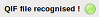

|
|
|
|
The import wizard will guide you through the 5 steps for importing a file.
At the present time the following file format can be imported into HomeBank:
This step is a simple introduction
You must select a file here, HomeBank will tell you if you can import that file or not:
If the file is supported:

If the file is not supported:
HomeBank will inform here about the file contents: number of accounts, transactions, payees and categories.

There is some case (CSV, QIF) when the file does not specify the name of the account the transactions should be attached to. In that case, HomeBank will detect it and let you choose to create a new account, or to attach the transaction to an existing account, if any.

That step is the most important one. HomeBank will detect for
duplicate transaction here, and you are able to modify in realtime
the date tolerance.
The match is done in order: by account,
amount and date.
If you want that HomeBank match really equal
date, then let that parameter to 0.
A little warning symbol will
inform you when a transaction has some duplicate, and you can see the
duplicate at the bottom part of the dialog: 'Possible
duplicate...'.
At last the duplicate transaction are not selected
and will not be imported, except if you select it manually.
The last summary, according to the transaction you selected or not, then you can 'Apply' it !